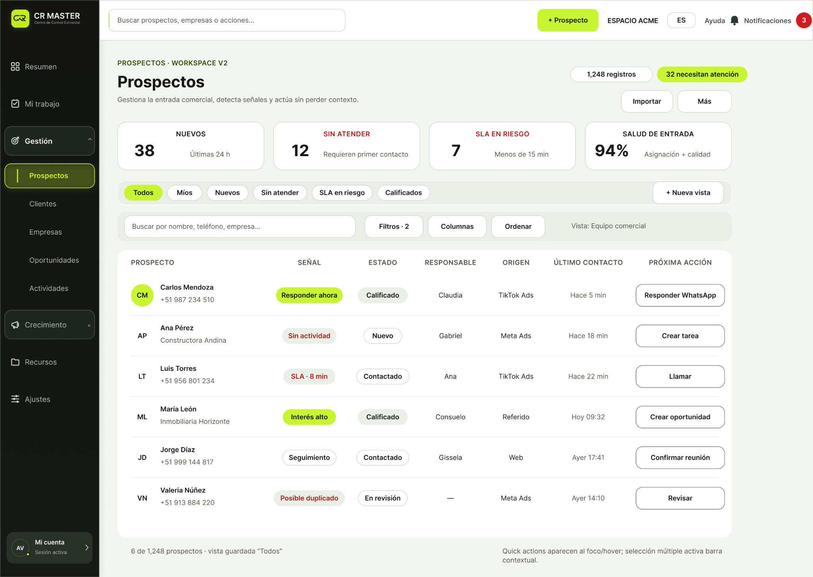
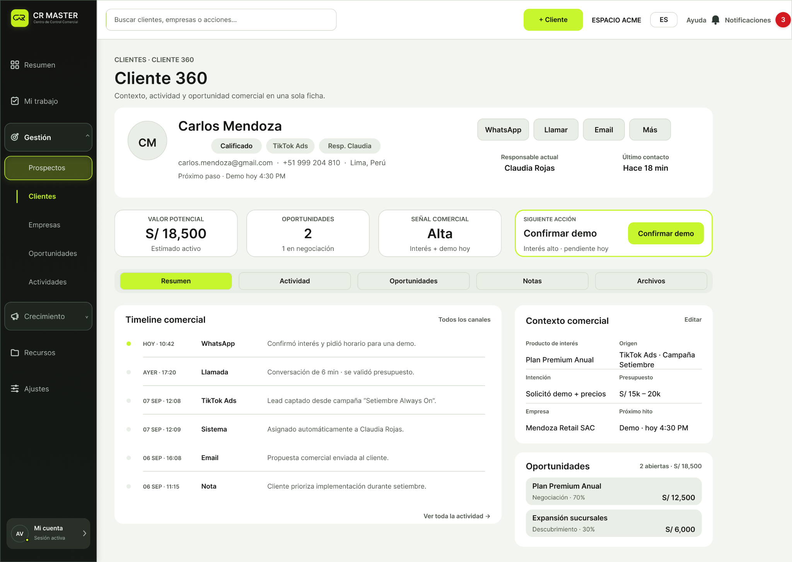
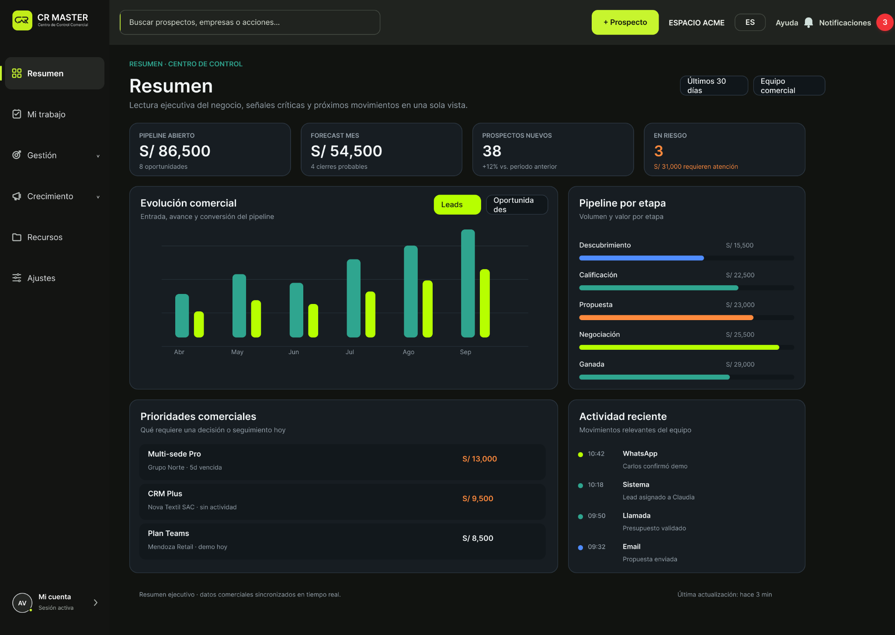
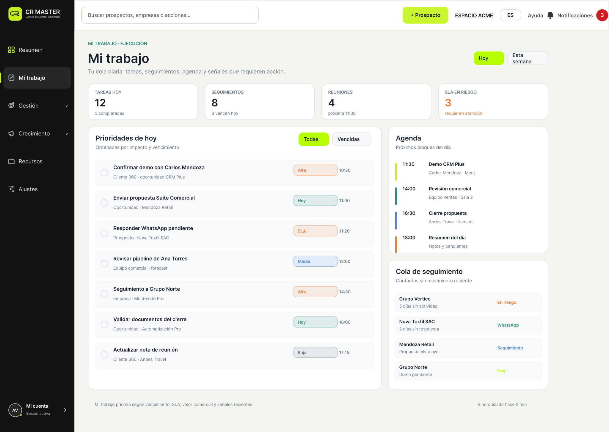
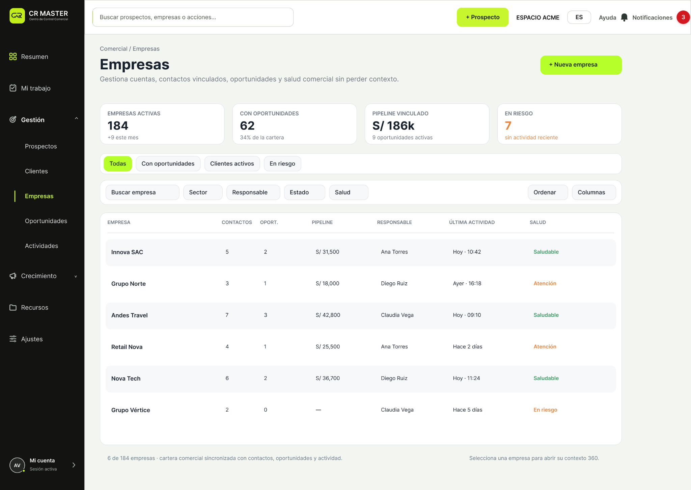
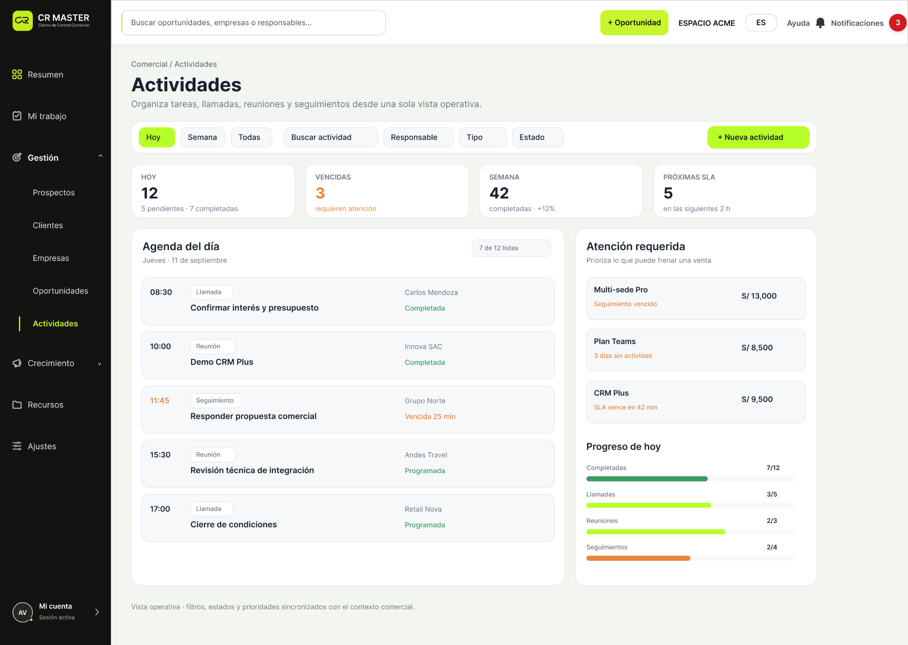
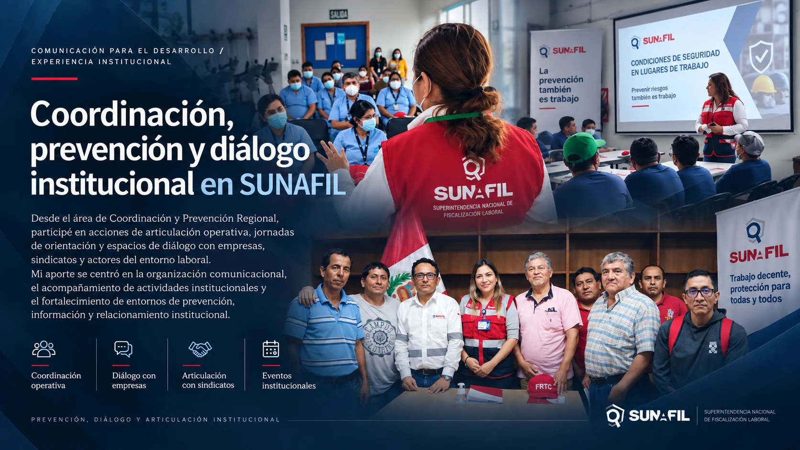
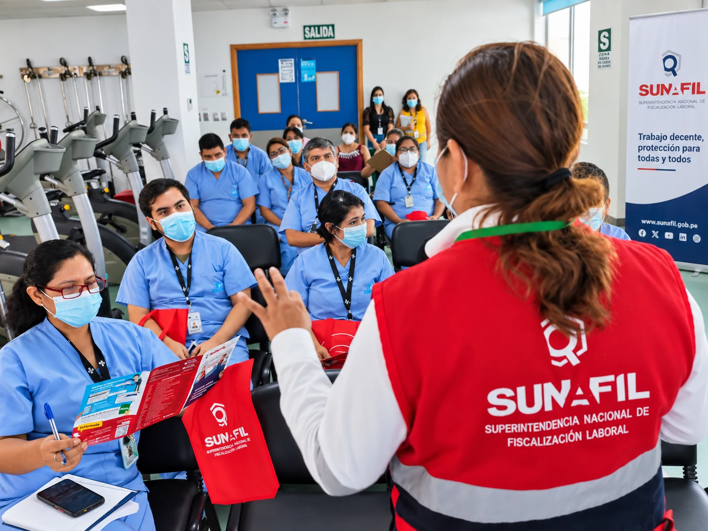
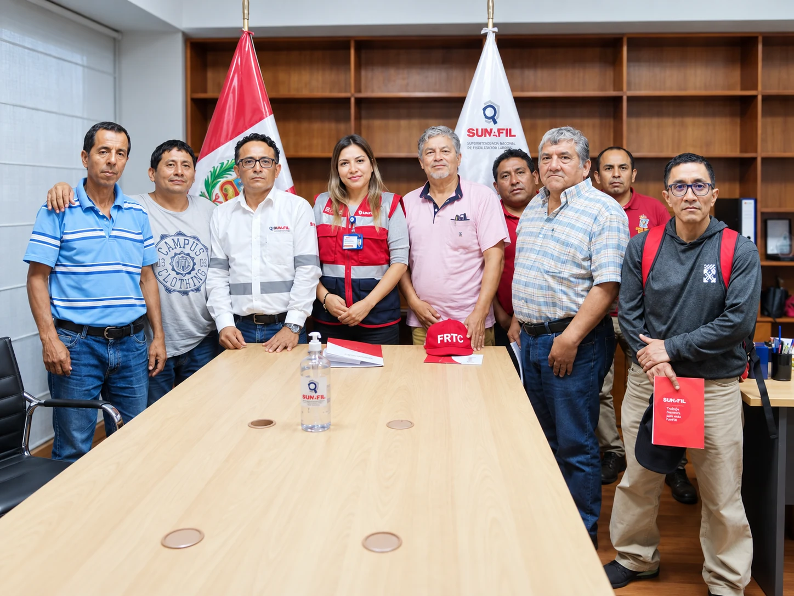
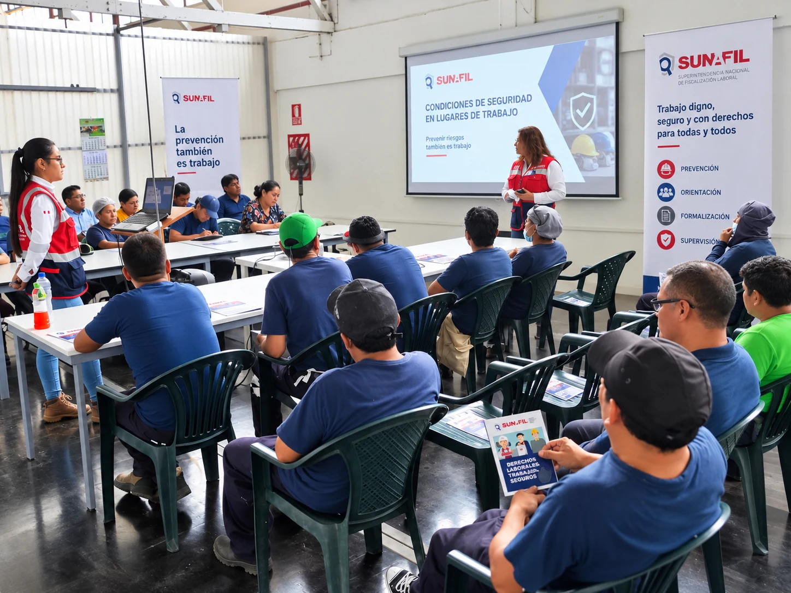

001
Experiencia · Producto digital
STUDIOS TKOH
Diseño de Producto
UX/UI
Marketing
2026 →
Luis Alberto Sabrera Espinoza
Diseño productos y sistemas digitales combinando UX/UI, comunicación, marketing y analítica. Mi trabajo empieza antes de la interfaz: empieza entendiendo información, personas y negocio.
Diseño de Producto / UX y Marketing — Studios TKOH
Marketing y Analítica — Amazon Magic Park
Diseño de Producto
Sistemas de Diseño
UX guiado por datos
TRABAJO SELECCIONADO
DISEÑO DE PRODUCTO · UX/UI · MARKETING
En Studios TKOH participo en la evolución de CR Master, un CRM SaaS. Mi trabajo conecta estructura de producto, UX/UI y comunicación visual para reducir fricción sin simplificar de más.

La lectura empieza por lo que requiere acción.
La vista rápida reduce saltos innecesarios.
Texto, posición y forma refuerzan el significado.


Prioridades, agenda y seguimiento diario.
Cartera, cuentas y lectura de salud comercial.
Tareas y reuniones dentro del mismo contexto.



Más módulos no deberían producir más ruido. El sistema visual debe ayudar a reconocer patrones, priorizar información y continuar trabajando sin reaprender la interfaz.
MARKETING · ANALÍTICA · CRM
En menos de dos meses conecté campañas, seguimiento y lectura comercial para que la información dejara de vivir aislada y empezara a sostener decisiones operativas.
Mi trabajo fue conectar captación, operación comercial y lectura de datos para que cada lead tuviera contexto, responsable y continuidad.
Campañas y contenido generan la primera señal de intención.
El lead entra al CRM con una fuente común y trazabilidad.
Asignación, SLA y seguimiento convierten el registro en trabajo comercial.
Los estados y métricas permiten detectar fricción y decidir qué ajustar.
rendimiento publicitario observado
leads con cobertura inicial
base comercial movilizada
asesores integrados al flujo
Campaña, lead, asignación, SLA y seguimiento dejaron de leerse como actividades separadas. El CRM pasó a funcionar como una capa común de operación.
No fue solamente ejecutar marketing. Fue ordenar el recorrido completo para que campaña, datos y trabajo comercial pudieran leerse como un mismo sistema.
JEFATURA DE MARKETING · MARCA · UX
En 20 Prod. lideré marketing y trabajé directamente en marca, UX web y contenido. Fue el puente entre mi formación en comunicación y la forma en la que hoy pienso producto.
Jerarquizar servicios para construir confianza y acercar al contacto comercial.
UX CORPORATIVO ↗ 02CONTAPERÚ GLOBALOrdenar una oferta amplia de módulos sin esconder la complejidad del producto.
ARQUITECTURA DE INFORMACIÓN ↗ 03SISTEMAS FORDConvertir categorías técnicas en rutas de decisión más rápidas.
UX PARA CATÁLOGO ↗Entender audiencias, estructurar mensajes y construir sistemas visuales. Esa secuencia terminó convirtiéndose en mi forma de abordar UX y producto.
COORDINACIÓN · PREVENCIÓN · COMUNICACIÓN INSTITUCIONAL
En Coordinación y Prevención Regional trabajé en jornadas de orientación y espacios de articulación con empresas, sindicatos y actores institucionales. El trabajo no ocurría en una pantalla: ocurría entre personas, contexto y mensaje.

Entender actores, necesidades y contexto antes de comunicar.
Dar estructura a jornadas, mensajes y puntos de contacto institucional.
Facilitar comprensión sin perder precisión ni tono de servicio público.



Porque mi trabajo actual no empieza en Figma. Empieza entendiendo información, personas y contexto. Esa parte de mi criterio se formó mucho antes de llamarla UX.
MI SISTEMA
Distintas disciplinas.
Mismo objetivo: claridad.
PERFIL
Empecé en comunicación, pasé por marca, marketing y trabajo institucional, y terminé encontrando en producto un lugar donde esas disciplinas podían trabajar juntas.
Hoy participo en UX / Diseño de Producto y Marketing para Studios TKOH, mientras trabajo en Marketing y Analítica para Amazon Magic Park.
Esa mezcla define mi forma de diseñar: entender primero, estructurar después y usar la interfaz como una herramienta para decidir mejor.
Personas, contexto, lenguaje y la información que realmente importa.
CJerarquías, flujos e interfaces capaces de sostener sistemas complejos.
PSeñales, comportamiento y métricas para saber qué mantener y qué cambiar.
DEvolución de un CRM SaaS, arquitectura de producto, experiencia y sistema visual.
Campañas, lectura de datos y operación comercial conectada con CRM.
Diseño de Producto
UX/UI
Sistemas de Diseño
Marketing y Analítica
Figma
Adobe Creative Suite
HTML / CSS
JavaScript básico
Universidad Nacional José Faustino Sánchez Carrión
Bachiller en Ciencias de la Comunicación
CONTACTO
Ahora cuéntame qué necesitas hacer más claro.
Lima, Perú · Disponible para oportunidades de Producto / UX.
El correo es mi canal principal para propuestas, colaboraciones y conversaciones sobre producto, UX y sistemas digitales.
Flujos, jerarquía e interfaces para productos con muchas piezas.
Consistencia visual, componentes y estructura para poder escalar.
Marketing y analítica cuando la decisión también necesita datos.